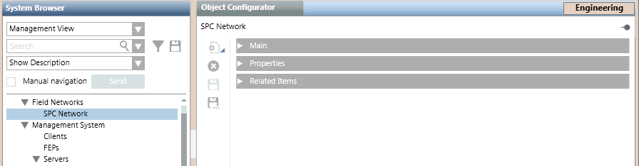

Create an SPC Network
This procedure is part of the workflow for integrating an SPC intrusion system.
You can skip this section if you want to configure panels under an existing SPC network.
- Select Project > Field Networks.
- Click New
 , and select SPC Network.
, and select SPC Network. - In the New Object dialog box, enter a name and description.
- Click OK.
- The newly created network is added to System Browser.
